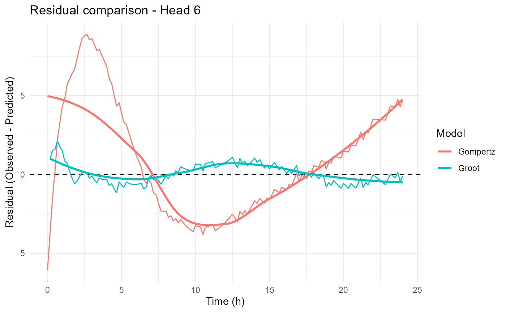
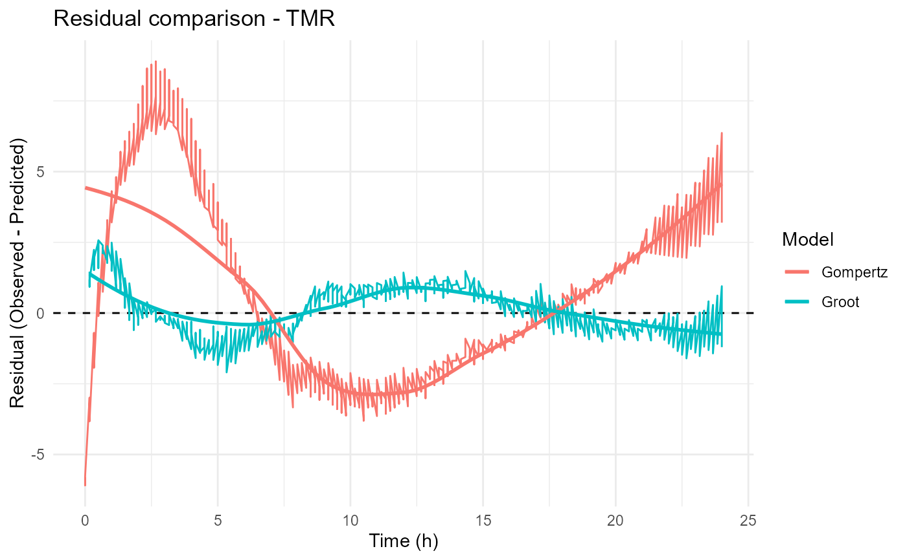
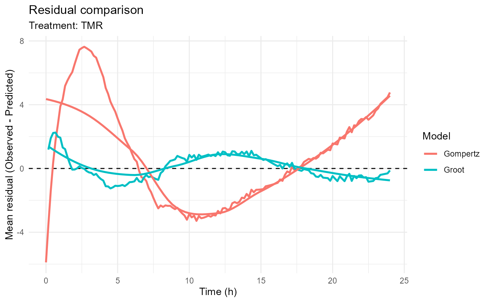
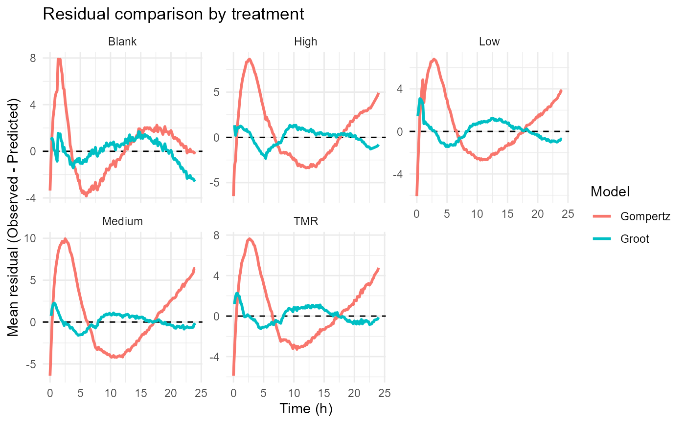

Plots residuals from one or more fitted models.
Arguments
- ...
Fitted model objects.
- head
Optional bottle identifier. If supplied, only the selected bottle is plotted.
- treatment
Optional treatment name. If supplied, only observations belonging to the selected treatment are plotted.
- mean_treatment
Logical. If
TRUE, treatment means are plotted.When used together with
treatment, the function displays the mean residual profile of the selected treatment.When
treatment = NULL, mean residual profiles are displayed for all treatments.
Details
Residuals are calculated as:
$$ Residual = Observed - Predicted $$
The function can be used to visualize:
A single bottle
All bottles within a treatment
Mean residual profiles for a selected treatment
Mean residual profiles across all treatments
Residual patterns from multiple fitted models
Residual plots are useful for:
Identifying systematic model bias
Detecting outliers
Evaluating model assumptions
Assessing goodness of fit
Comparing competing kinetic models
Evaluating treatment-level model performance
Ideally, residuals should be randomly distributed around zero with no obvious trend through time.
Examples
files <- example_data()
raw_data <- read_ankom(
files$ankom
)
metadata <- read_metadata(
files$metadata
)
gp <- process_ankom(
raw_data,
metadata,
headspace_ml = 210,
temperature_c = 39
)
gp_clean <- exclude_heads(
gp,
heads = c(
"1",
"2",
"4",
"20"
),
reason = c(
"Abnormal gas profile",
"Abnormal gas profile",
"Abnormal gas profile",
"Abnormal gas profile"
)
)
groot_fit <- fit_groot(
gp_clean
)
#> Minor negative pressure values detected. Minimum PSI = -0.255 . These may reflect normal sensor variation.
#> rumenGP data validation passed.
#> Observations: 3038
#> Heads: 21
#> Treatments: 5
gompertz_fit <- fit_gompertz(
gp_clean
)
#> Minor negative pressure values detected. Minimum PSI = -0.255 . These may reflect normal sensor variation.
#> rumenGP data validation passed.
#> Observations: 3038
#> Heads: 21
#> Treatments: 5
# Single bottle
plot_residuals(
Groot = groot_fit,
Gompertz = gompertz_fit,
head = 6
)
#> `geom_smooth()` using formula = 'y ~ x'

# Treatment-specific residuals
plot_residuals(
Groot = groot_fit,
Gompertz = gompertz_fit,
treatment = "TMR"
)
#> `geom_smooth()` using formula = 'y ~ x'

# Mean residual profile of one treatment
plot_residuals(
Groot = groot_fit,
Gompertz = gompertz_fit,
treatment = "TMR",
mean_treatment = TRUE
)
#> `geom_smooth()` using formula = 'y ~ x'

# Mean residual profiles of all treatments
plot_residuals(
Groot = groot_fit,
Gompertz = gompertz_fit,
mean_treatment = TRUE
)
